الغموض والألغاز · ملف تاريخي
ماري سيليست: السفينة التي عادت بلا ركاب
عشرة أشخاص عبروا المحيط الأطلسي سنة 1872. عُثر على سفينتهم، لكنهم لم يعودوا أبدًا. ماذا تقول الوثائق؟ وماذا أضاف الخيال إلى القصة؟

المصادر التاريخية والمراجع
نميز في هذا المقال بين الوقائع المسجلة والفرضيات التي لا يمكن إثباتها.